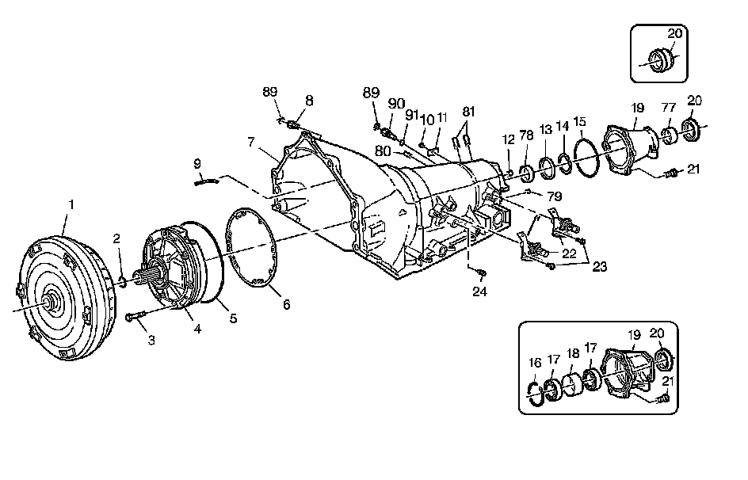
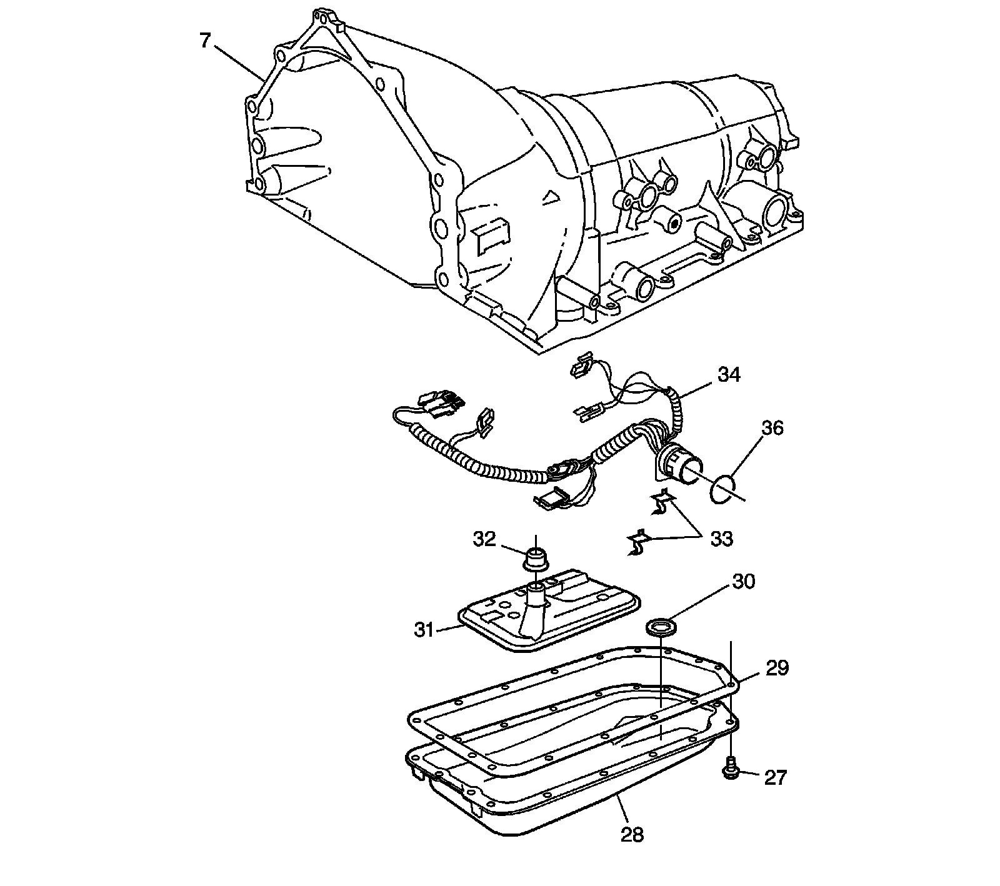
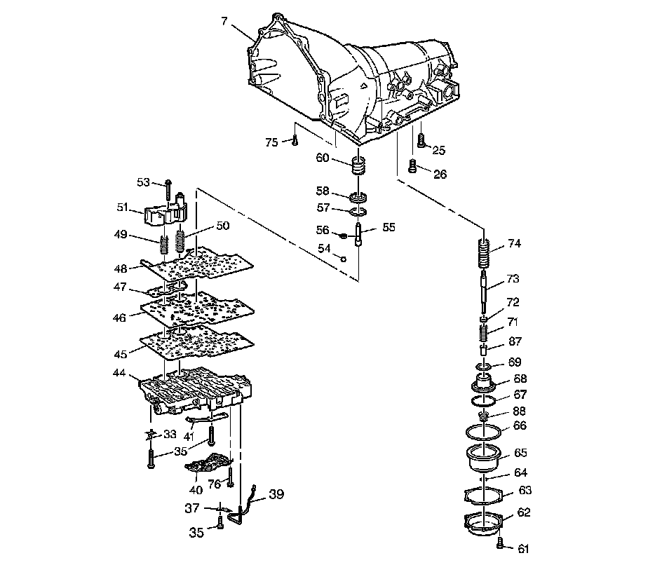

Case and Associated Parts
Disassembled Views
Case and Associated Parts (1 of 3):

1 - Torque Converter Assembly
2 - Turbine Shaft Front Oil Seal Ring
3 - A/Trans O/Pump Bolt and Seal Assembly
4 - A/Trans Oil Pump Assembly
5 - A/Trans Oil Pump Seal
6 - A/Trans Oil Pump Gasket
7 - A/Trans Case Assembly
8 - Transmission Oil Cooler Pipe Connector
9 - Vent Pipe
10 - Nameplate Pin
11 - A/Trans Name Plate
12 - Orifice Lube Oil - 2WD Plug Case - 4WD
13 - Output Shaft Seal
14 - Output Shaft Seal Retainer Ring
15 - Case Extension Seal
16 - Bearing Retainer Ring
17 - Ball Bearing Assembly
17 - Ball Bearing Assembly
18 - Bearing Spacer
19 - Case Extension Assembly
19 - Case Extension Assembly
20 - Prop Shaft Front Slip Yoke Oil Seal Assembly
20 - Prop Shaft Front Slip Yoke Oil Seal Assembly
20 - Prop Shaft Front Slip Yoke Oil Seal Assembly
21 - Case Extension Bolt
21 - Case Extension Bolt
22 - A/T Input Speed and 2WD Output Speed Sensor Assembly (4WD Plug)
23 - Input Speed and Output Speed Sensor Bolt
24 - Line Pressure Test Hole Plug
77 - Prop Shaft Front Slip Yoke Bushing
78 - Output Shaft Bushing
79 - Direct Oil Gal - 0.25 Diameter Cup Plug
80 - Manual 2-1 Band Anchor Pin
81 - Low and Reverse Band Anchor Pin
89 - Transmission Oil Cooler Pipe Retainer (Some Models)
89 - Transmission Oil Cooler Pipe Retainer (Some Models)
90 - Transmission Rear Oil Cooler Pipe Fitting
91 - Transmission Rear Oil Cooler Pipe Fitting Seal
Case and Associated Parts (2 of 3):

7 - A/Trans Case Assembly
27 - Transmission Oil Pan Bolt
28 - Transmission Oil Pan
29 - Transmission Oil Pan Gasket
30 - A/Trans Oil Pan Magnet
31 - Transmission Oil Filter Assembly
32 - Filter Neck Seal Assembly
33 - A/Trans Wiring Harness Clamp
34 - A/Trans Wiring Harness Assembly
36 - Pass Thru O-ring seal
Case and Associated Parts (3 of 3):

7 - A/Trans Case Assembly
25 - Center Support Bolt
26 - Fourth Clutch Housing Bolt
33 - Electrical Cable Clamp
35 - Control Valve Body Assembly Bolt
35 - Control Valve Body Assembly Bolt
37 - Lube Oil Pipe Retainer
39 - Lube Oil Pipe
40 - A/T Fluid Pressure Manual Valve Position Switch
41 - Manual Shift Shaft Detent Spring Assembly
44 - Control Valve Assembly (w/Body and Valves)
45 - Control Valve Body Gasket
46 - Control Valve Body Spacer Plate
47 - Accumulator Housing Gasket
48 - Control Valve Body Spacer Plate Gasket
49 - 4th Clutch Accumulator Piston Spring
50 - 3rd Clutch Accumulator Piston Spring
51 - 3rd and 4th Clutch Accumulator Housing
53 - 3rd and 4th Clutch Accumulator Housing Bolt
54 - Control Valve Body Ball Check Valve
55 - Manual 2-1 Band Servo Piston Pin
56 - Manual 2-1 Band Servo Piston Pin Retainer Ring
57 - Manual 2-1 Band Servo Piston Seal
58 - Manual 2-1 Band Servo Piston
60 - Manual 2-1 Band Servo Piston Cushion Spring
61 - Low and Reverse Band Servo Cover Bolt
62 - Low and Reverse Band Servo Cover
63 - Low and Reverse Band Servo Cover Gasket
64 - Low and Reverse Band Servo Piston Pin Retainer Ring
65 - Low and Reverse Band Servo Piston
66 - Low and Reverse Band Servo Piston Seal
67 - Low and Reverse Accumulator Piston Outer Oil Seal Ring
68 - 1-2 Accumulator Piston
69 - Low and Reverse Accumulator Piston Inner Oil Seal Ring
71 - Low and Reverse Band Servo Piston Spring
72 - Low and Reverse Band Servo Piston Spring Retainer
73 - Low and Reverse Band Servo Piston Pin (Selective)
74 - Low and Reverse Accumulator Piston Spring
75 - TCC Solenoid Valve Screen
76 - TFP Manual Valve Position Switch Bolt
87 - Low and Reverse Band Servo Piston Spacer
88 - 1-2 Accumulator Piston Spring Assembly